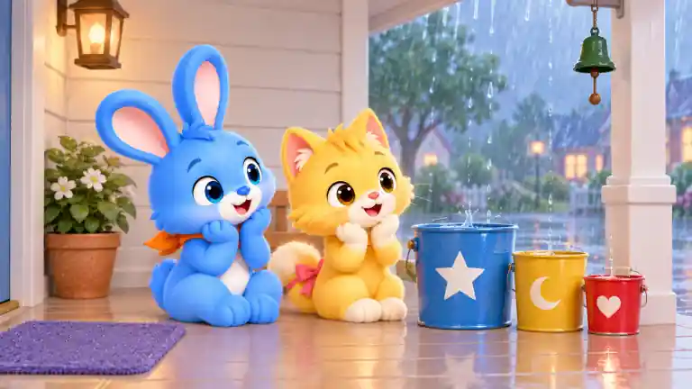
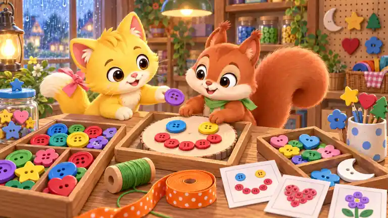
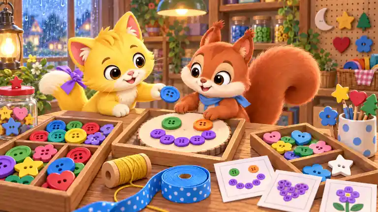
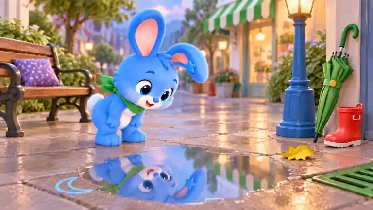
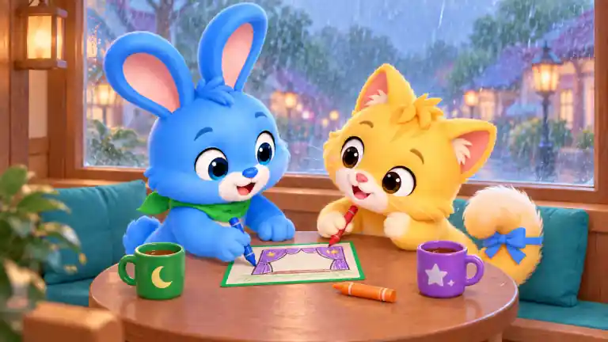

内置 image_gen 生成。按实际画面复杂度人工复核：低 061/064/067/070，中 062/065/068，高 063/066/069。以下为 768×432、WebP 质量 30 预览。源图未接入游戏；B 展示全部候选。
双角色围绕风筝与雨伞，门廊地面和雨幕留白充足。
兔橙巾变绿；猫粉尾饰变蓝；蓝风筝变紫；红风筝尾变黄；黄伞变蓝；绿伞柄变橙；紫坐垫变青；灯笼框变蓝；门垫白月变白花；红雨靴变绿
单角色与五把花纹伞集中成一组，拱廊雨景提供适中背景信息。
鸭蓝巾变紫；绿伞架变蓝；蓝接水盘变红；红纯色伞变绿；黄圆点伞变粉；蓝条纹伞变绿；紫星伞变红；橙格伞变蓝；粉毛巾变黄；白月挂钩变白星
三层面包陈列、灯具、纸袋、夹子、瓷砖与雨夜街景形成高密度画面。
猫粉尾饰变蓝；绿白棚变蓝白；红吊灯变紫；蓝月牙盘变绿；篮紫带变橙；蛋糕绿底变蓝；橙夹变紫；纸袋白星变白心；黄杯变红；蓝月贴变蓝花
双角色、三个大容器与大面积干净门廊构成少量清晰目标。

兔橙巾变绿；猫粉尾饰变蓝；蓝大桶变紫；黄中桶变绿；红小桶变橙；大桶白星变白花；中桶白月变白心；小桶白心变白月；绿铃变蓝；紫垫变黄
星伴、彩窗、坐垫和窗台物件分区清楚，彩窗本身提供适中细节。
星伴蓝领结变绿；棕包变紫；红菱形变橙；左白月变白星；右花变心；紫垫变蓝；橙灯笼框变绿；蓝杯变红；绿帘带变紫；黄心砖变蓝
多盘纽扣、图卡、线轴、丝带、罐子及货架构成密集多区搜索。


松鼠绿巾变蓝；猫粉尾饰变紫；笑脸左蓝眼变绿；右黄眼变橙；红笑嘴变紫；递出紫扣变蓝；绿线轴变黄；橙丝带变蓝；蓝星罐盖变红；右盘白月变白星
单角色与单个大水洼为核心，长椅和街灯分散且街景虚化。

兔橙巾变绿；黄星耳夹变蓝；蓝粉笔星变蓝月；绿坐垫变紫；红灯柱变蓝；紫伞变绿；黄雨靴变红；蓝排水盖变绿；橙叶变黄；蓝白棚变绿白
双角色、收纳袋、风筝、手推车、毛巾与雨伞组成适中物件量。
熊绿巾变紫；兔橙巾变绿；绿袋变蓝；袋白月变白花；蓝风筝变紫；红风筝尾变黄；黄车变红；蓝轮芯变绿；紫白巾变蓝白；红伞变黄
双角色之外有多层花桶、花材、卷纸、丝带、标签和雨窗细节。
猫粉尾饰变蓝；鸭蓝巾变紫；黄向日葵变橙；左粉花变紫；右蓝花变粉；绿包纸变蓝；紫束带变黄；红伞变绿；蓝星桶变紫；橙剪柄变蓝
双角色与单桌为主，画纸、三支蜡笔和两只杯子都是大而清晰的目标。

兔橙巾变绿；猫粉尾饰变蓝；画卡蓝边变绿；红幕布变紫；绿蜡笔变蓝；紫蜡笔变红；黄蜡笔变橙；蓝月杯变绿；黄星杯变紫；紫坐垫变青